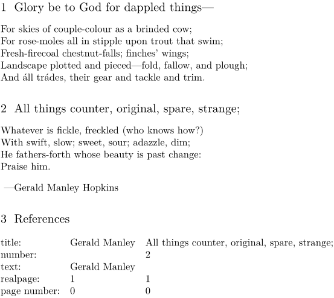

Contents
Summary
The command
\ref
is used for referencing.
Settings
| \ref[...][...] | |
| [...] | default text title number page realpage |
| [...] | reference |
| Option | Explanation |
|---|---|
| text | The "text" of the label |
| title | The "title" of the label |
| number | The "number" of the label |
| page | The "user" page number on which the label is |
| realpage | The real page number on which the label is |
Description
This command looks up some property of some reference (e.g., a section, example, figure or custom reference made with
\reference
).
You should not normally have to use this command. Links are better made using \in or \at, which are more conceptual (and create a clickable link as well).
If you want to implement some custom command for building references, this command is useful. You might also want to use the \goto command for making the reference clickable.
Examples
Example 1
-
\setuppapersize[A7,landscape] \section{Glory be to God for dappled things---} \startlines For skies of couple-colour as a brinded cow; For rose-moles all in stipple upon trout that swim; Fresh-firecoal chestnut-falls; finches’ wings; Landscape plotted and pieced—fold, fallow, and plough; And áll trádes, their gear and tackle and trim. \stoplines \section[sec]{All things counter, original, spare, strange;} \startlines Whatever is fickle, freckled (who knows how?) With swift, slow; sweet, sour; adazzle, dim; He fathers-forth whose beauty is past change: Praise him. \stoplines \reference[ref]{Gerald Manley} ---Gerald Manley Hopkins \section{References} \starttabulate[|l|l|l|] \NC title: \NC \ref[title] [ref] \NC \ref[title] [sec] \NC \NR \NC number: \NC \ref[number] [ref] \NC \ref[number] [sec] \NC \NR \NC text: \NC \ref[text] [ref] \NC \ref[text] [sec] \NC \NR \NC realpage: \NC \ref[realpage][ref] \NC \ref[realpage][sec] \NC \NR \NC page number: \NC \ref[page] [ref] \NC \ref[page] [sec] \NC \NR \stoptabulate
- 